| Homepage | Prezzi | Top 10 attrazioni | Contattami per e-mail |
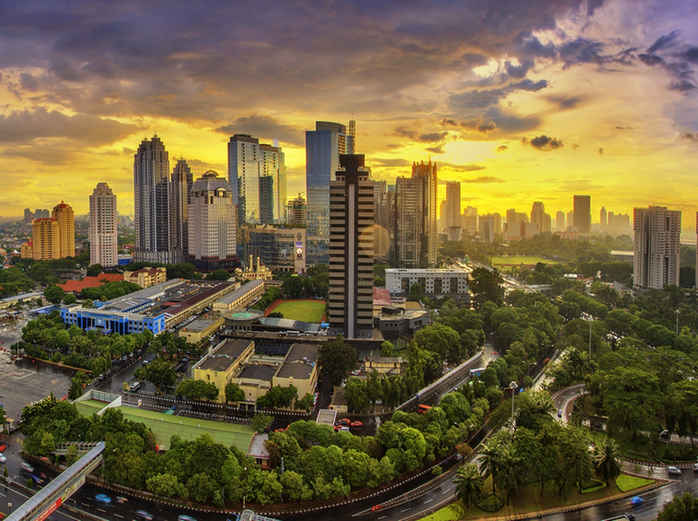
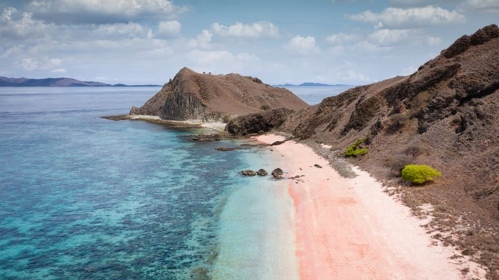
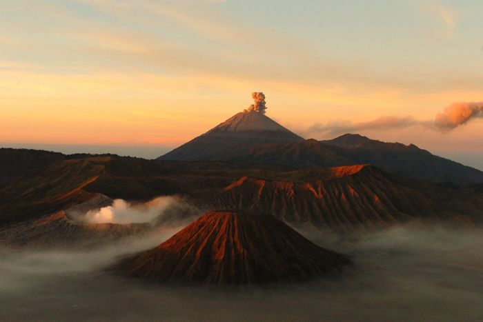
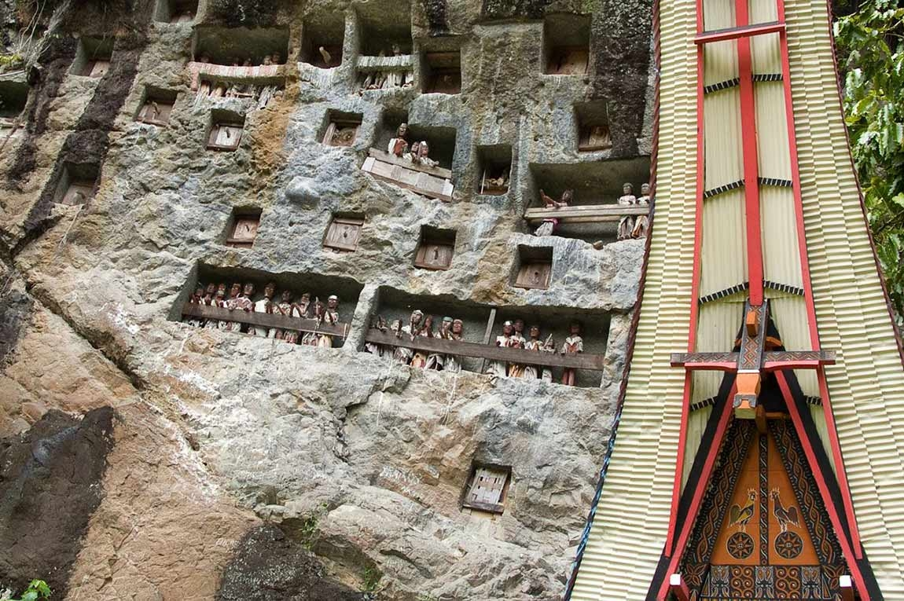
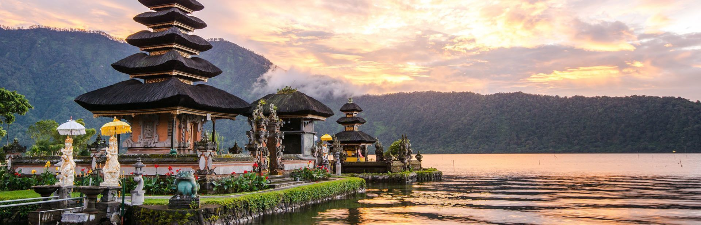
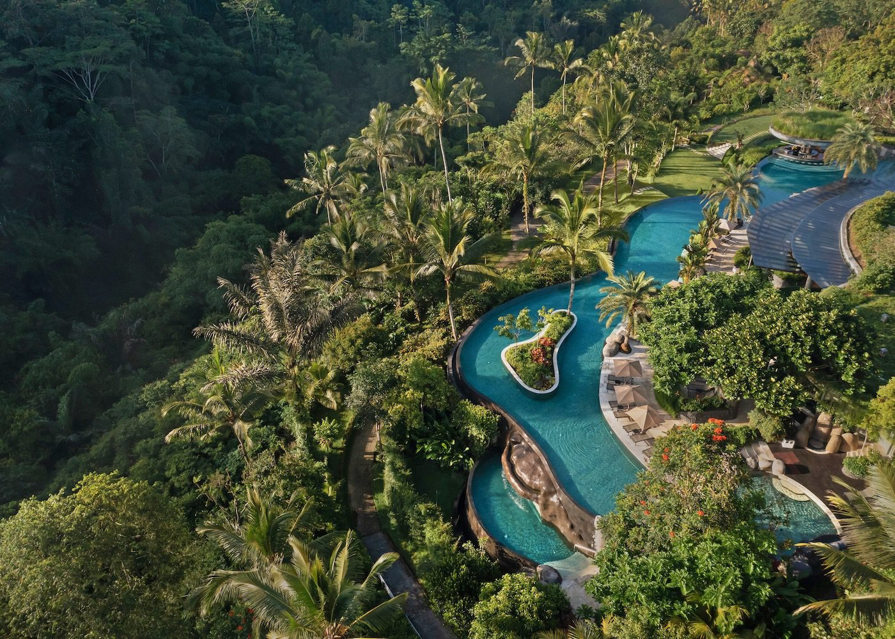
Situata nel sud-est asiatico e con più di 17.000 isole, l'Indonesia è un'incredibile nazione con una varietà di cultura
e tradizione che sorprenderà i turisti più esigenti. Non importa dove vai: finirai sempre per stupirti grazie a giugle selvagge
e spiagge paradisiache. Questa fantastica meta è inoltre la più gettonata per il surfing e lo yoga in tutto il mondo.
Di solito, visitare o viaggiare attraverso l'Indonesia può essere fatto con un budget minore rispetto ad altre regioni dell'Asia.
Per saperne di più sui prezzi clicca qui
La varietà di luoghi da visitare è notevole; ecco tuttavia, alcune mete consigliate:
Antiche religioni, spiagge, variopinte danze tradizionali, profumati mercatini e solenni templi,
senza ovviamente dimenticare la deliziosa gastronomia locale. Tutto questo è Bali : un mix di natura
incontaminata e profonda spiritualità che la popolazione locale offre con grande ospitalità ai visitatori.
Quest'isola, una delle 17.000 dell'arcipelago indonesiano, si trova a ovest dell' isola di Java ed è bagnata dal
Mare di Java a Nord e dall'Oceano Indiano a Sud. Qui tutto è dolcezza e armonia.
Bali è anche verdi foreste, suggestive risaie e vulcani.
Clicca qui per scoprire di più sulle attività che ti aspettano sull'isola!
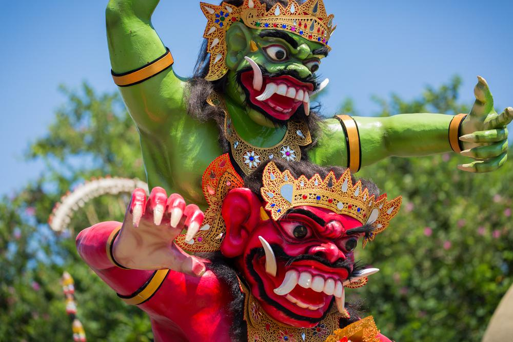
Il Nyepi Day è conosciuto anche come "Giorno del silenzio", e costituisce una delle più importanti
celebrazioni per gli induisti di Bali; si tiene l'11 marzo.
Segna, inoltre, l'inizio del nuovo anno nel calendario lunare balinese.
La giornata del Nyepi rappresenta, secondo la cultura e la religione locale, un momento dell'anno
da dedicare alla riflessione, alla purificazione e alla liberazione dal male.
Per questa ragione, dalle 6 del mattino della giornata fino alle 6 del mattino successivo è vietato
tutto ciò che potrebbe interferire e distrarci da noi stessi.
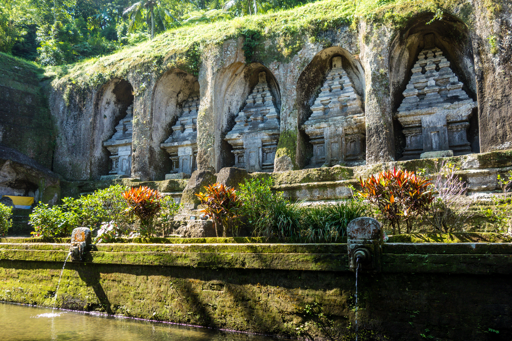
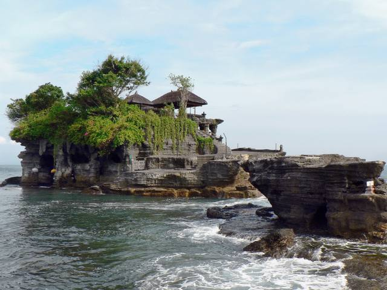
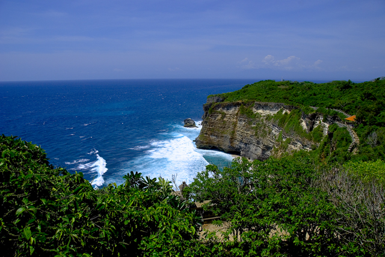
Giacarta (o Jakarta , in indonesiano), ricca di grattacieli e costruzioni moderne, il traffico
e il fitto reticolo di canali che si snodano al suo interno, è l'emblema della cultura indonesiana.
Qui si può cogliere l'anima di un paese ricco di speranze, che negli ultimi tempi
sta subendo uno sviluppo senza precedenti.
Giacarta è uno dei paesi più popolosi dell'Indonesia: milioni di abitanti affollano questo centro
indù, poi musulmano, che è il frutto dell'agglomerazione di numerosi villaggi.
Qui puoi trovare i migliori luoghi da visitare in questa magnifica meta
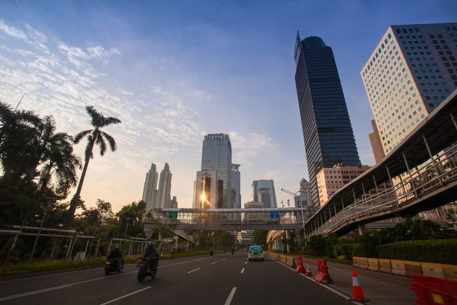
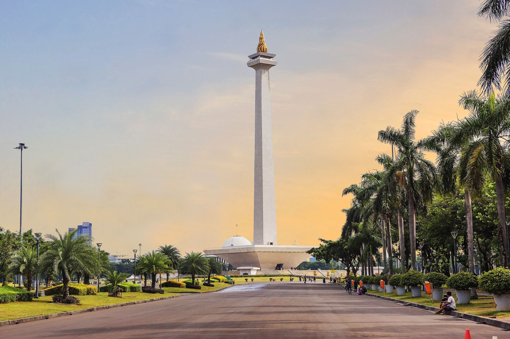
L'isola di Komodo non è conosciuta soltanto perché residenza dei famosi "draghi" , ma anche per le sue
straordinarie bellezze naturalistiche. Si tratta a tutti gli effetti di una delle perle dell'Indonesia,
luogo magico e suggestivo, in cui ogni genere di turista potrà vivere un'esperienza davvero unica.
Anno dopo anno, il numero di persone che scelgono questa parte dell'Indonesia per concedersi
qualche giorno di riposo aumentano in modo esponenziale. Qui, infatti, potrai goderti lo splendido mare,
immergerti in una natura selvaggia e incontaminata e conoscere tradizioni e usanze locali.
Clicca qui per maggiori informazioni riguardo le attività più scelte
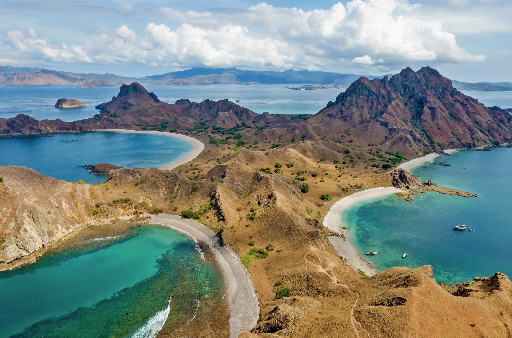
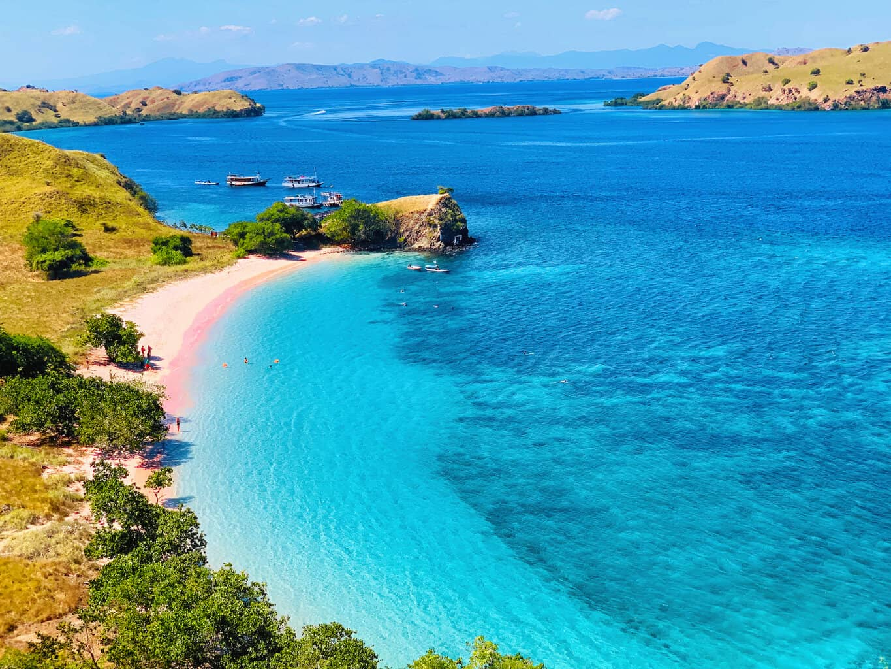
L'isola di Giava, lunga 1000 Km e larga 200, è incastonata tra la grande Sumatra e la piccola
Bali dalla quale dista solo pochi chilometri via mare.
Essa conquista con la sua varietà di panorami: dai suoi vulcani alle meravigliose spiagge ,
dalle verdeggianti foreste tropicali e dai piccoli villaggi da esplorare ai moderni centri abitati.
Qui trovi le migliori attrazioni che ti conquisteranno!
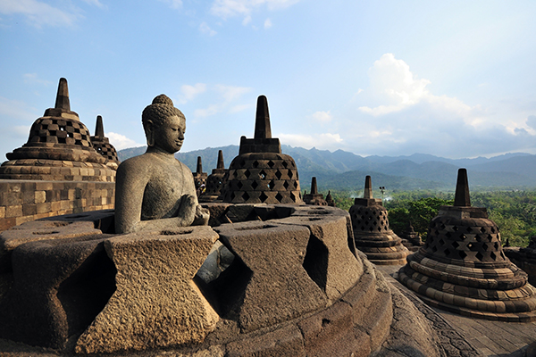
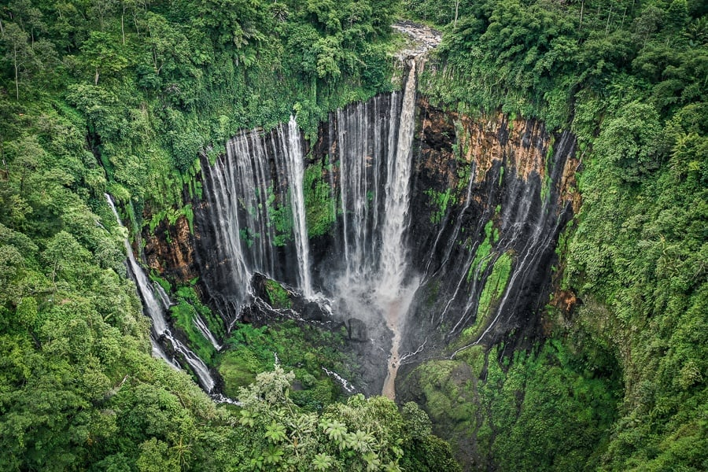
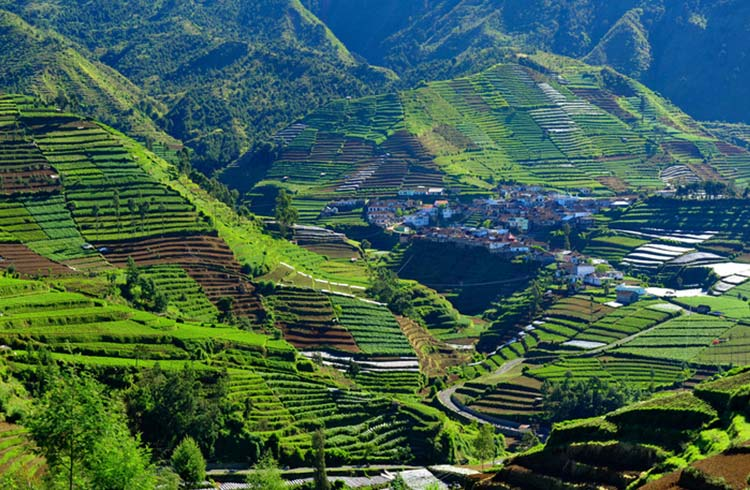
Raja Ampat è la destinazione da sogno in Indonesia, l' arcipelago delle meraviglie che incanta i viaggiatori
di tutto il mondo, desiderosi di visitare l'eden terrestre. Le isole calcaree ricoperte da una vegetazione
lussureggiante e circondate da acque trasparenti, abitate da una straordinaria varietà di flora e fauna marina
e le spiagge di sabbia color talco sono solo alcune delle peculiarità di questa meta stupefacente.
Ecco una lista di attività che faranno al caso tuo
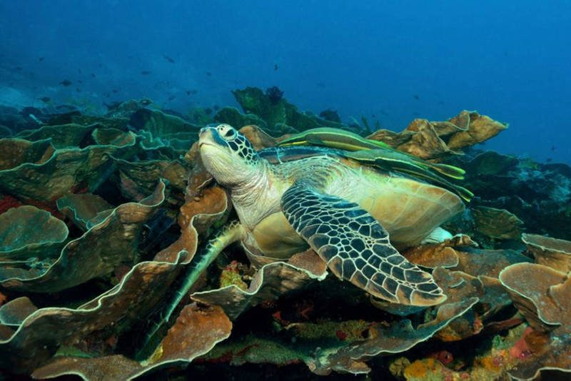
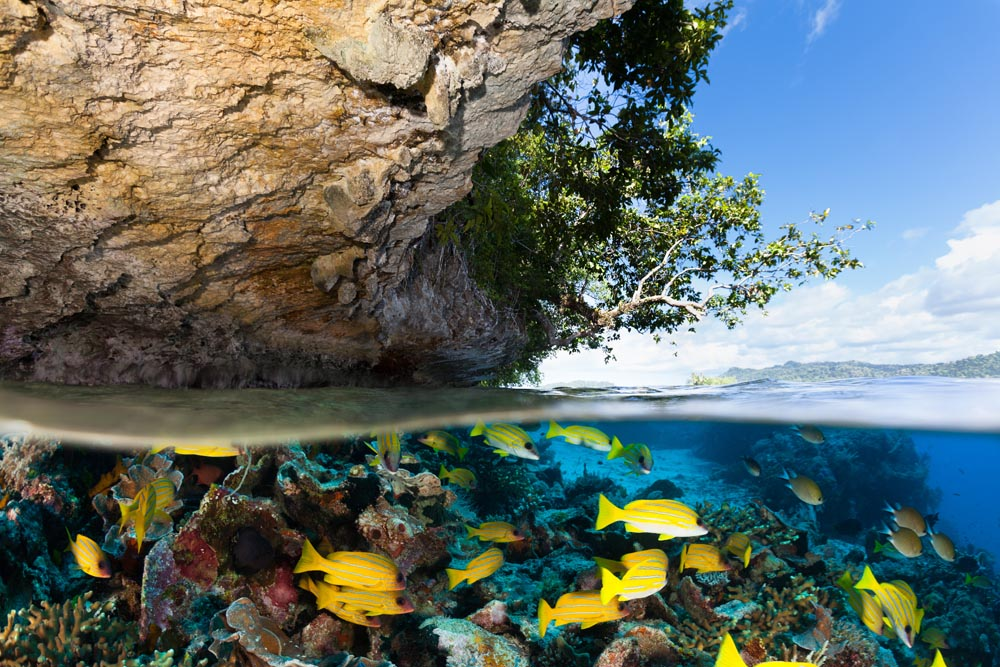
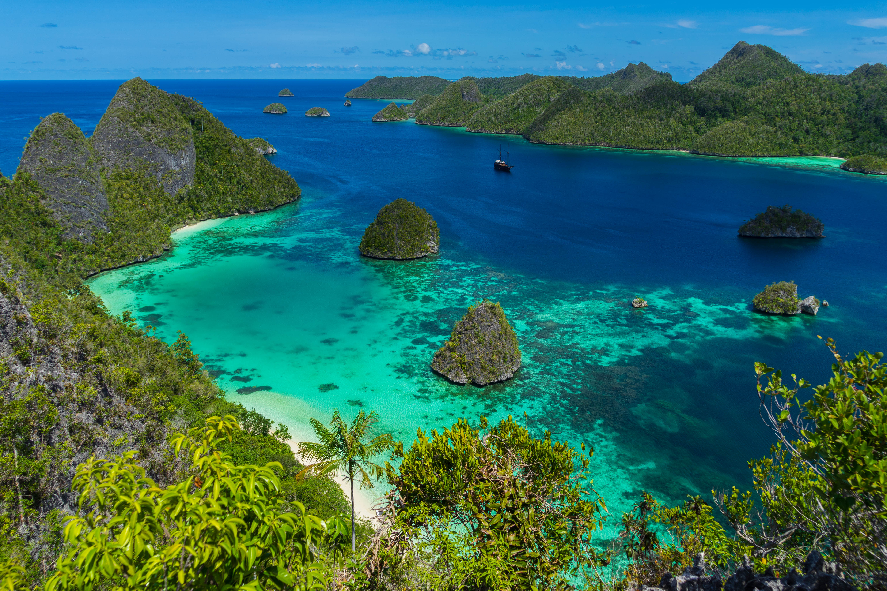